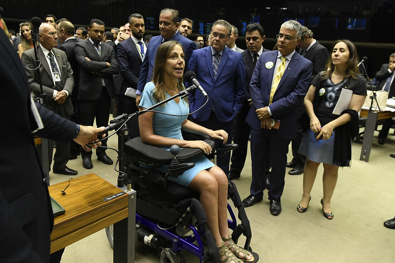
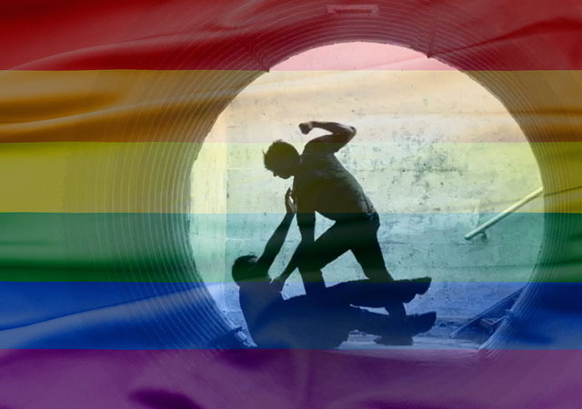

CAPACITISMO
Impactos do Capacitismo
O preconceito contra pessoas com deficiência é uma forma de discriminação que se manifesta em atitudes negativas, estigmas e barreiras sociais. Esse preconceito pode se manifestar de várias maneiras, como:
- Estigmatização: As pessoas com deficiência muitas vezes são vistas de forma negativa, como menos capazes ou inferiores.
- Acessibilidade: Muitas vezes, o ambiente físico e social não é adaptado para atender às necessidades dessas pessoas, limitando sua participação na sociedade.
- Falta de compreensão: A falta de informação e educação sobre deficiências contribui para mitos e mal-entendidos, levando a atitudes discriminatórias.
- Exclusão social: Muitas pessoas com deficiência enfrentam isolamento e exclusão em atividades sociais, educacionais e profissionais.
Silenciamento pelo Capacitismo.
Qual lei criminaliza o Capacitismo?
A principal lei que aborda o preconceito contra pessoas com deficiência no Brasil é a Lei Brasileira de Inclusão da Pessoa com Deficiência, também conhecida como Estatuto da Pessoa com Deficiência (Lei nº 13.146/2015). Essa lei visa garantir e promover os direitos das pessoas com deficiência, assegurando sua inclusão social e combate à discriminação.
Entre seus principais pontos, a lei:
- Proíbe a discriminação: Estabelece que é vedada qualquer forma de discriminação em razão da deficiência.
- Direito à acessibilidade: Garante o direito à acessibilidade em espaços públicos e privados.
- Educação inclusiva: Promove a inclusão de pessoas com deficiência no sistema educacional.
- Emprego e renda: Estimula a inclusão dessas pessoas no mercado de trabalho.
Além dessa lei, o Brasil também é signatário da Convenção sobre os Direitos das Pessoas com Deficiência da ONU, que reforça a luta contra o preconceito e a promoção dos direitos humanos para esse grupo.
Luta pela criminalização do Capacitismo.
Ações contra o Capacitismo
O preconceito contra pessoas com deficiência pode ser evitado através de várias ações e iniciativas, como:
- Educação e conscientização: Promover campanhas educativas nas escolas e comunidades para informar sobre deficiências e desmistificar estigmas.
- Inclusão nas escolas: Garantir que as instituições de ensino adotem práticas inclusivas, permitindo que crianças com e sem deficiência aprendam juntas.
- Acessibilidade: Melhorar a infraestrutura urbana, garantindo que espaços públicos, transportes e serviços sejam acessíveis a todos.
- Representação midiática: Incentivar a representação positiva de pessoas com deficiência na mídia, mostrando suas capacidades e conquistas.
- Políticas públicas: Implementar leis e políticas que protejam os direitos das pessoas com deficiência e promovam sua inclusão social e laboral.
- Treinamento em empatia: Realizar treinamentos para profissionais de diversas áreas (saúde, educação, serviços) sobre como lidar com pessoas com deficiência de maneira respeitosa e inclusiva.
- Diálogo aberto: Criar espaços para diálogo onde pessoas com deficiência possam compartilhar suas experiências e desafios, promovendo a empatia na sociedade.
Essas ações podem contribuir para uma sociedade mais inclusiva e respeitosa, reduzindo o preconceito e promovendo a igualdade. Combater esse preconceito exige conscientização, educação e a promoção da inclusão, para que as pessoas com deficiência possam ter igualdade de oportunidades e serem respeitadas em sua dignidade.

Inclusão de pessoas com deficiência no mercado de trabalho.
Mais informações sobre o Capacitismo
LGBTQIAP+FOBIA
O que é LGBTQIAP+Fobia?
LGBTQIAP+Fobia refere-se à intolerância, discriminação e aversão a indivíduos que não se identificam como heterossexuais ou cisgêneras. Isso abrange:
- Homossexualidade: Atração entre pessoas do mesmo sexo.
- Transgeneridade: Indivíduos cuja identidade de gênero não se alinha ao gênero atribuído ao nascimento.
- Outras identidades: Inclui bissexuais, travestis, transexuais e não-binários, entre outros.
Parada LGBTQIAP+ de São Paulo.
Tipos de LGBTQIAP+Fobia
- Social: Preconceito manifestado em relações pessoais e no convívio social.
- Estrutural: Discriminação institucionalizada que se reflete em políticas públicas e na legislação.
- Física: Violência física e agressões direcionadas a pessoas LGBTQIAP+.
Protesto contra massacre de pessoas LGBTQIAP+.
Qual lei criminaliza a LGBTQIAP+Fobia?
Em junho de 2019, o Supremo Tribunal Federal (STF) reconheceu a omissão do Congresso Nacional em legislar sobre discriminação por identidade de gênero e orientação sexual. A decisão determinou que a homotransfobia deveria ser enquadrada na Lei do Racismo (Lei 7.716/1989), proporcionando um arcabouço legal para punir atos de violência e discriminação contra a comunidade LGBTQIAP+.
Deputada Erika Hilton lutando pelos direitos da comunidade na Câmara dos Deputados.
Como surgiu a LGBTQIAP+Fobia no Brasil?
A LGBTfobia no Brasil possui raízes profundas que remontam à colonização:
- Colonização: A imposição de valores europeus e a opressão dos corpos indígenas estabeleceram bases para a discriminação.
- Cultura patriarcal: O fortalecimento de normas de gênero rígidas e heteronormativas contribuiu para a marginalização de identidades não conformes.
- Herança histórica: O preconceito que afeta a comunidade LGBTQIAP+Fobia também se estende a populações indígenas, refletindo uma longa história de violência e exclusão.
Valores heteronormativos.
Impactos da LGBTQIAP+Fobia
- Saúde Mental: A LGBTQIAP+Fobia está associada a altos níveis de depressão, ansiedade e suicídio entre indivíduos LGBTQIAP+.
- Violência: A comunidade frequentemente enfrenta violência física e verbal, criando um ambiente de medo e insegurança.
- Desigualdade Social: A discriminação resulta em barreiras ao acesso a serviços de saúde, educação e emprego. 
Bullying contra homens gays.
Ações contra LGBTQIAP+Fobia
- Educação: Workshops e materiais sobre diversidade sexual e de gênero.
- Políticas de Inclusão: Implementação de políticas de não discriminação e programas de apoio.
- Apoio Legal: Fortalecimento de legislações e serviços jurídicos gratuitos.
- Espaços Seguros: Centros comunitários para apoio psicológico e social.
- Campanhas de Conscientização: Mídia que desafie estereótipos e promova aceitação.
- Treinamento: Capacitação de profissionais para lidar com questões LGBTQIAP+.
- Parcerias: Colaboração com ONGs e empresas para promover diversidade.
Mês do Orgulho: Junho.
Mais informações sobre a comunidade LGBTQIAP+